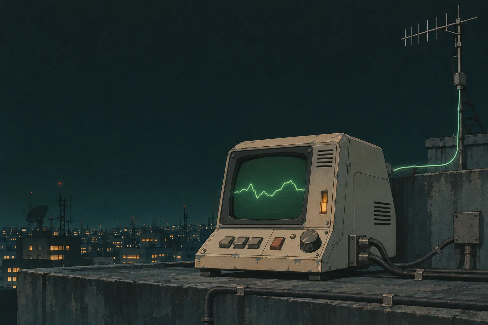

Open source · MIT
Your chats Your call
Find messages and summarise WhatsApp chats with your AI agent. Read-only access on your Mac.
Install on macOSWhat your agent can read
- By default
Metadata only, such as the chat name, last message time and unread count.
- With your permission
Message text from the chats you allow. The connector cannot send messages.
-
WhatsApp for MacSyncs chats from your phone.
-
WAExportCreates a filtered copy on your Mac. Only WAExport needs Full Disk Access.
-
Your AI agentQueries the copy through the MCP connector.
Your AI provider can receive the data your agent reads. Security model ↗
Install on your Mac
Setup guides you through granting access to WAExport and connecting your agent. Then choose which chats it can read.
- macOS 14+
- WhatsApp for Mac with your chats synced
- Xcode Command Line Tools and uv
Works with Claude Code, Claude Desktop, ChatGPT for Mac, Codex and other local MCP clients.
macOS Terminal
git clone https://github.com/AIOjPINEDA/whatsapp-context.git ~/whatsapp-context &&
cd ~/whatsapp-context &&
make setupInstall with an agent
Paste this prompt into an agent that can run commands on your Mac.
Clone https://github.com/AIOjPINEDA/whatsapp-context into ~/whatsapp-context and follow INSTALL.md. Ask me before each step that needs my input.